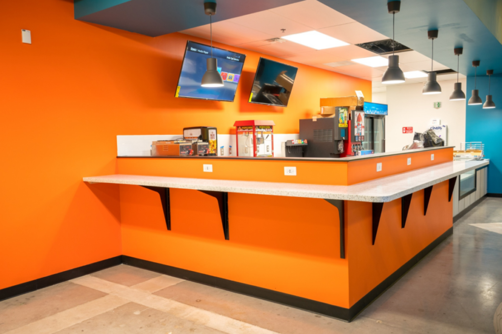
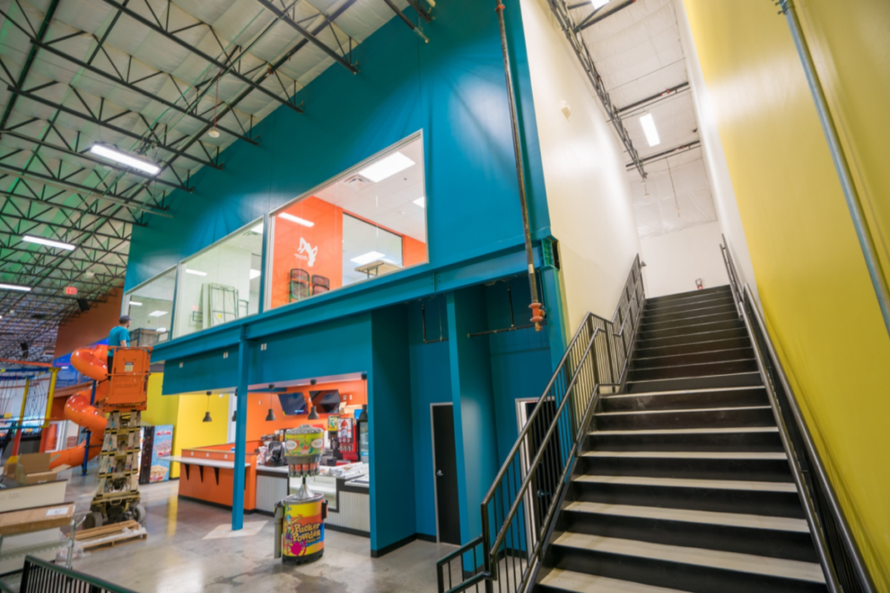
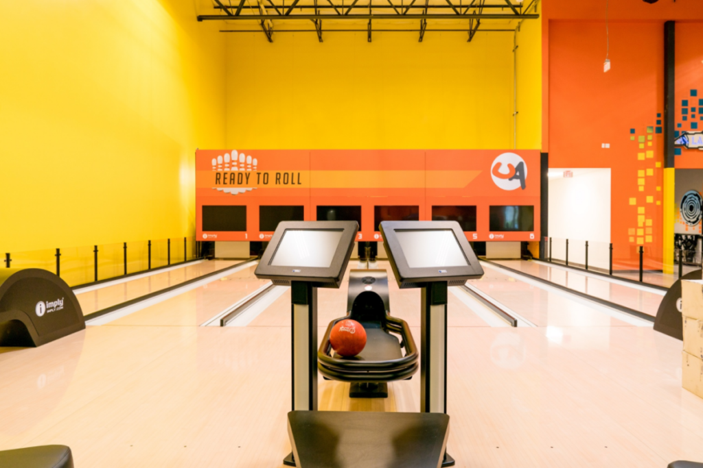
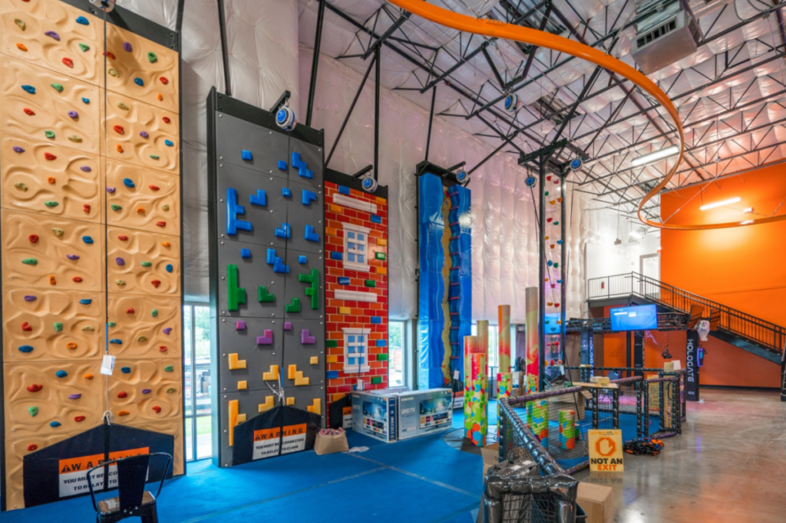

GBI Austin completed a 24,076 square foot tenant finish-out for Urban Air, a children's adventure park featuring an arcade, play area, mezzanine, miniature bowling alley, food court, laser tag arena, and a full trampoline area.
The scope included a custom light fixture package, multi-area lighting controls tailored to each zone, and custom power circuits for the facility's arcade equipment.



